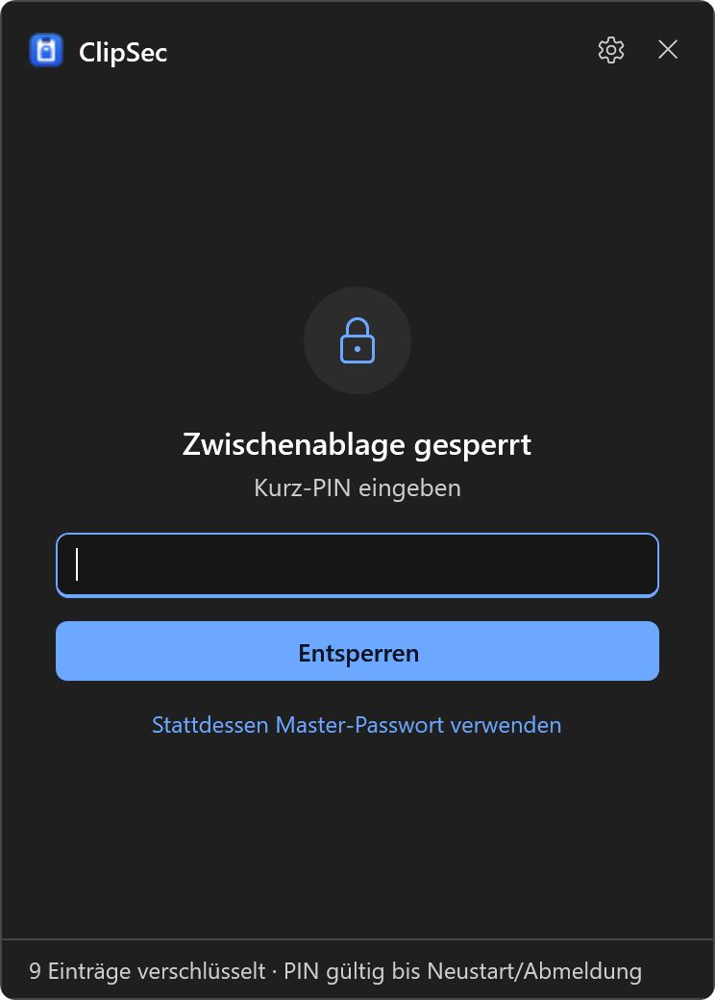
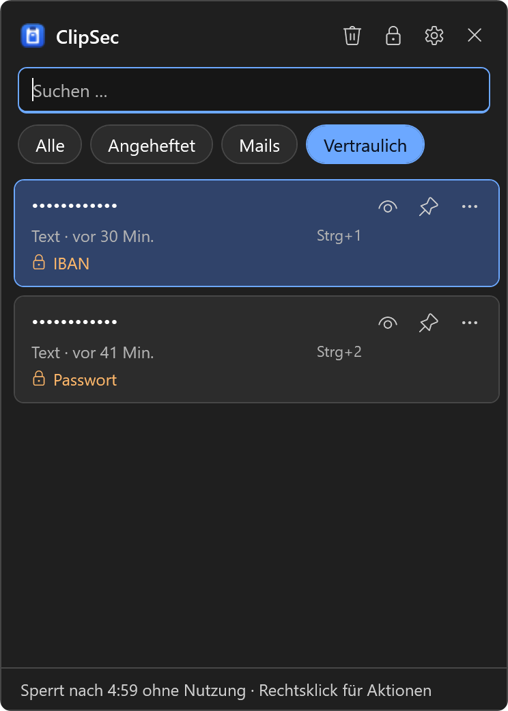
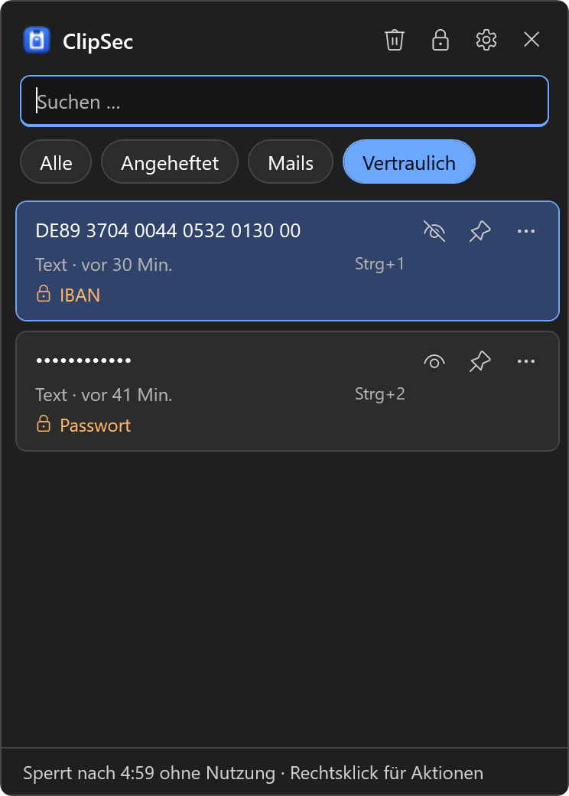
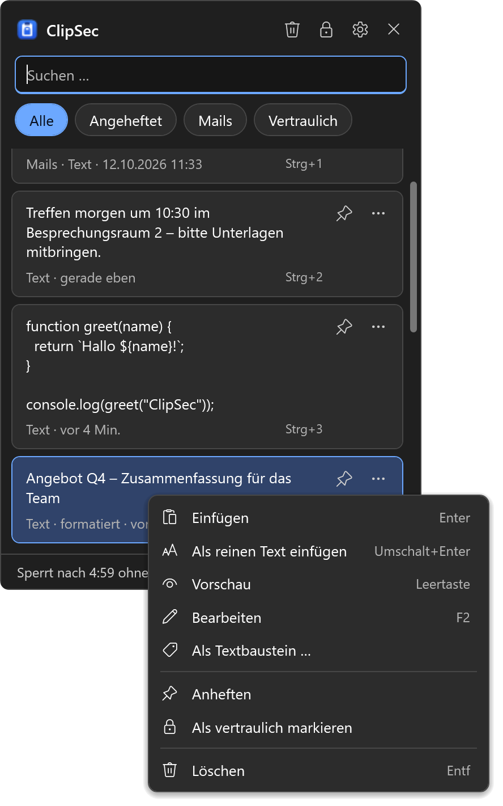
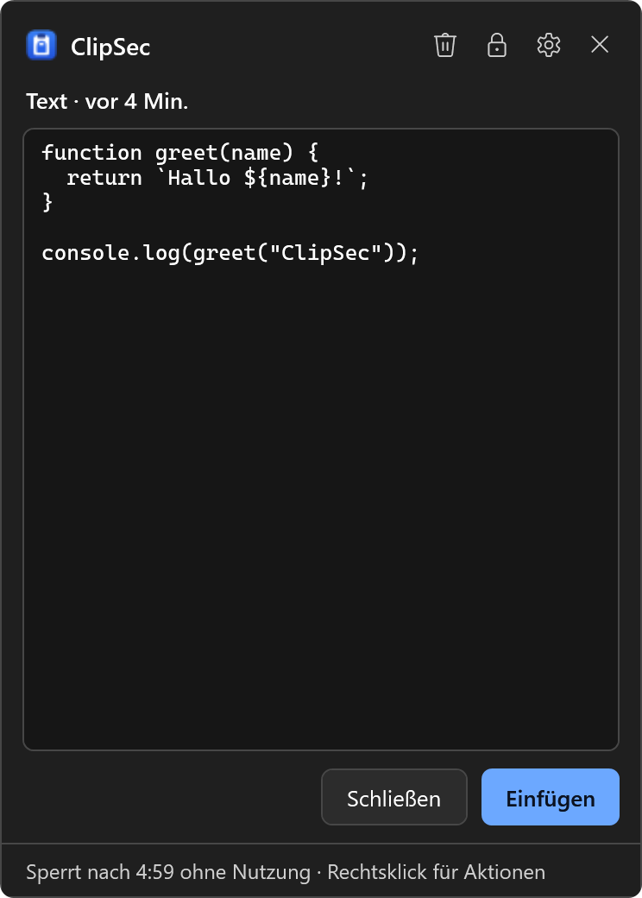
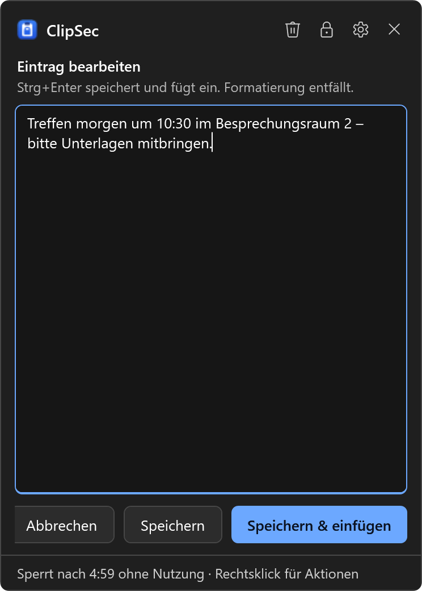
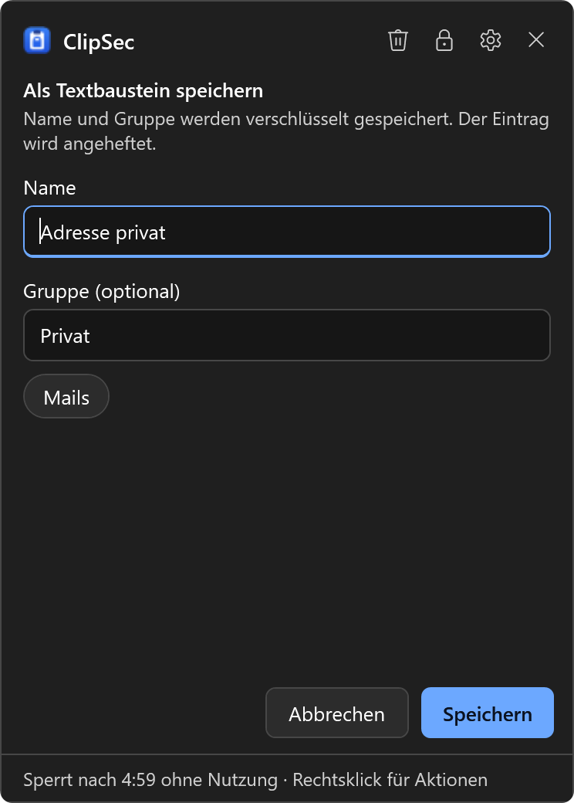
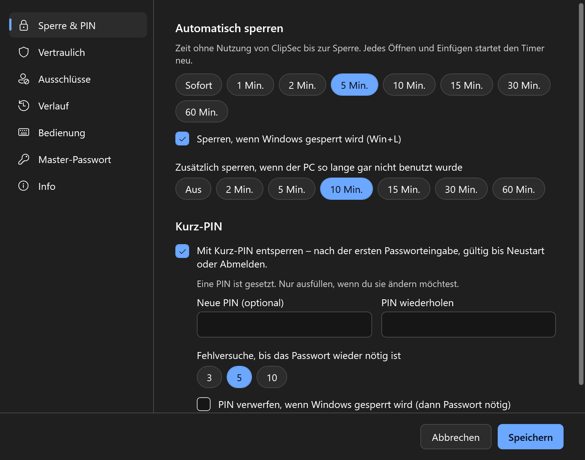
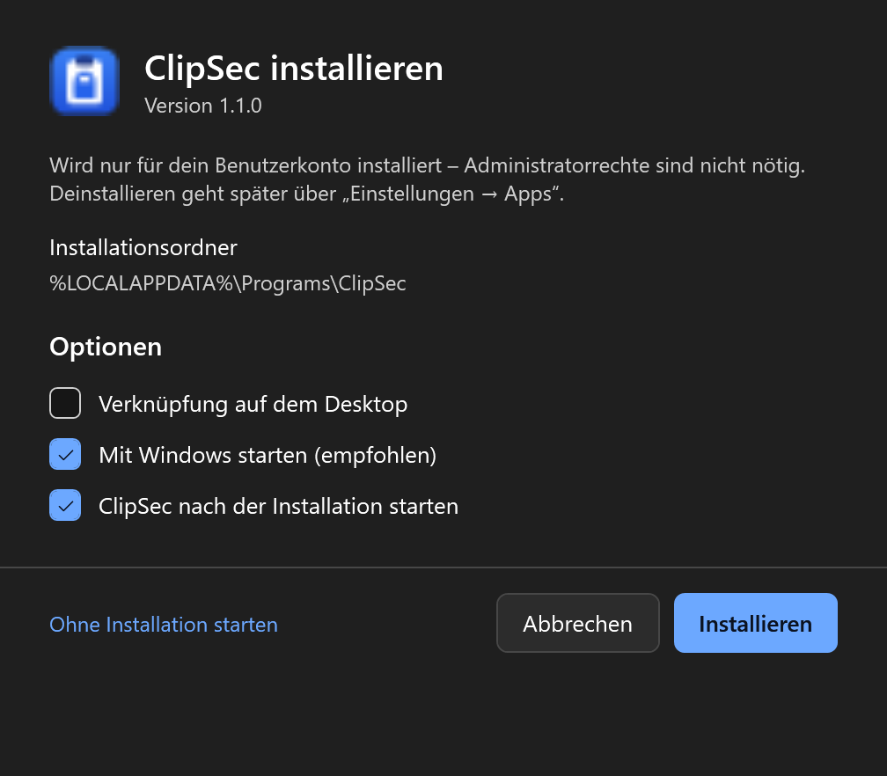
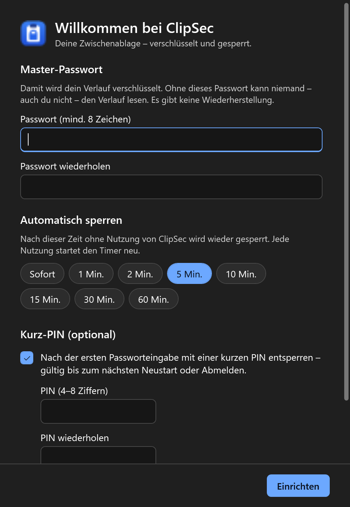

Win+V mit Master-Passwort
ClipSec übernimmt das bekannte Tastenkürzel. Ohne Passwort bleibt der Verlauf verschlossen – auch für Programme, die die Dateien lesen.
Open Source · Windows 10 & 11
Windows merkt sich alles, was du kopierst – Passwörter, IBANs, private Nachrichten. Und jeder, der kurz an deinem PC sitzt, sieht es mit Win+V. ClipSec ersetzt den Verlauf durch einen verschlüsselten Tresor, der erst nach deinem Passwort aufgeht.
Der eingebaute Verlauf hat keine Sperre. Wer an deinem entsperrten PC sitzt, sieht die letzten Kopien – inklusive Passwörtern.
Angeheftete Einträge überleben Neustarts, auf Wunsch werden Kopien sogar geräteübergreifend in die Cloud synchronisiert.
Jeder Eintrag wird einzeln verschlüsselt. Ohne Master-Passwort (oder Kurz-PIN) kommt niemand an den Verlauf – auch nicht über die Dateien.
Funktionen
ClipSec übernimmt das bekannte Tastenkürzel. Ohne Passwort bleibt der Verlauf verschlossen – auch für Programme, die die Dateien lesen.
Solange du ClipSec benutzt, bleibt es offen. Nach 1–60 Minuten ohne Nutzung (oder sofort) sperrt es wieder. Dazu: Sperre bei Win+L, Standby und – optional – PC-Inaktivität.
Einmal das lange Passwort, danach reicht eine 4–8-stellige PIN – bis zum Neustart oder Abmelden. Nach zu vielen Fehlversuchen ist wieder das Passwort fällig.
Passwörter, IBANs, Kreditkarten, API-Schlüssel und Zugangsdaten werden erkannt und als •••• angezeigt. Optional verlangt das Aufdecken erneut das Master-Passwort.
Liegt Vertrauliches in der Zwischenablage, wird sie nach 30 Sekunden geleert – aber nur, wenn du seitdem nichts anderes kopiert hast.
Banking-App, Passwortmanager & Co.: Was dort kopiert wird, landet nie im Verlauf. Markierungen von KeePass, 1Password und Bitwarden werden respektiert.
Formatierungen aus Word oder dem Browser bleiben erhalten. Umschalt+Enter fügt bewusst ohne Formatierung ein.
Strg+1 … 9 fügt direkt ein, die Leertaste zeigt lange Texte und Bilder groß an.
Tippfehler korrigieren oder Platzhalter ersetzen: F2 öffnet den Eintrag, Strg+Enter speichert und fügt ein.
Signaturen, Adressen, Standardantworten: benennen, gruppieren, anheften – und über Filter-Chips mit einem Klick finden. Namen werden mitverschlüsselt.
Alte Einträge verschwinden auf Wunsch nach 1–90 Tagen, vertrauliche schon nach Minuten. Angeheftetes bleibt.
Ein Setup, pro Benutzer, mit Startmenü-Eintrag und sauberer Deinstallation über „Apps“. Oder einfach portabel starten.
Einblicke
Echte Screenshots, erzeugt mit Beispieldaten. Klick auf ein Bild für die große Ansicht.










Sicherheit
ClipSec blendet den Verlauf nicht nur aus – ohne Passwort ist er kryptografisch unlesbar. Auch für ClipSec selbst.
Text, Bild oder Datei landet in der Zwischenablage.
Mit dem öffentlichen Schlüssel: ECDH P-256 + AES-256-GCM. Klappt auch gesperrt.
Nur verschlüsselt auf der Platte – inkl. Formatierung, Name und Gruppe.
Master-Passwort → PBKDF2 (600 000 Runden) → privater Schlüssel → lesbar.
Download
Der Download ist hier gerade nicht verfügbar. Alle Versionen findest du bei den GitHub-Releases.
Ältere Versionen & Änderungen: Releases auf GitHub
ClipSec-Setup.exe ausführen. Windows SmartScreen warnt bei neuen, unsignierten Programmen:
„Weitere Informationen“ → „Trotzdem ausführen“.
In PowerShell: Get-FileHash .\ClipSec-Setup.exe – der Wert muss mit der SHA-256 links übereinstimmen.
Mindestens 8 Zeichen, gut merken – es gibt keine Wiederherstellung. Optional eine Kurz-PIN.
Einstellungen → System → Zwischenablage: „Zwischenablageverlauf“ und „Geräteübergreifend synchronisieren“ aus. Sonst speichert Windows Kopien zusätzlich unverschlüsselt.
Tastatur
| Win+V | ClipSec öffnen (alternativ Strg+Umschalt+V) |
| Enter | Ausgewählten Eintrag einfügen |
| Umschalt+Enter | Als reinen Text einfügen |
| Strg+1 … 9 | n-ten Eintrag direkt einfügen |
| Leertaste | Große Vorschau |
| F2 | Bearbeiten |
| Entf | Löschen |
| Esc | Schließen |
FAQ
Dann ist der gespeicherte Verlauf nicht mehr lesbar – das ist der Sinn der Verschlüsselung. Über das Tray-Symbol → „Passwort vergessen – Tresor zurücksetzen“ löschst du den Verlauf und vergibst ein neues Passwort.
Nur lokal unter %LOCALAPPDATA%\ClipSec: vault.json (verschlüsselter Schlüssel),
history.dat (verschlüsselte Einträge) und settings.json. ClipSec hat keine Cloud,
kein Konto und sendet nichts ins Internet.
SmartScreen warnt bei Programmen, die (noch) nicht oft heruntergeladen wurden oder nicht kostenpflichtig signiert sind. Der Quellcode ist offen, jedes Release wird automatisch auf GitHub gebaut, und die SHA-256-Prüfsumme kannst du selbst vergleichen.
Nein. Schadsoftware, die unter deinem Benutzerkonto läuft, kann Tastatureingaben und den Arbeitsspeicher mitlesen. ClipSec schützt vor Menschen an deinem PC und vor dem Auslesen der gespeicherten Dateien.
Ja. Diese Programme markieren kopierte Passwörter als „nicht in den Verlauf aufnehmen“ – ClipSec respektiert das. Zusätzlich kannst du sie unter Einstellungen → Ausschlüsse komplett ausschließen.
Es wird trotzdem aufgenommen – mit dem öffentlichen Schlüssel verschlüsselt. Lesen kann ClipSec es erst nach dem Entsperren.
Über Windows-Einstellungen → Apps oder in ClipSec unter Einstellungen → Info. Dabei kannst du wählen, ob dein verschlüsselter Verlauf erhalten bleibt.